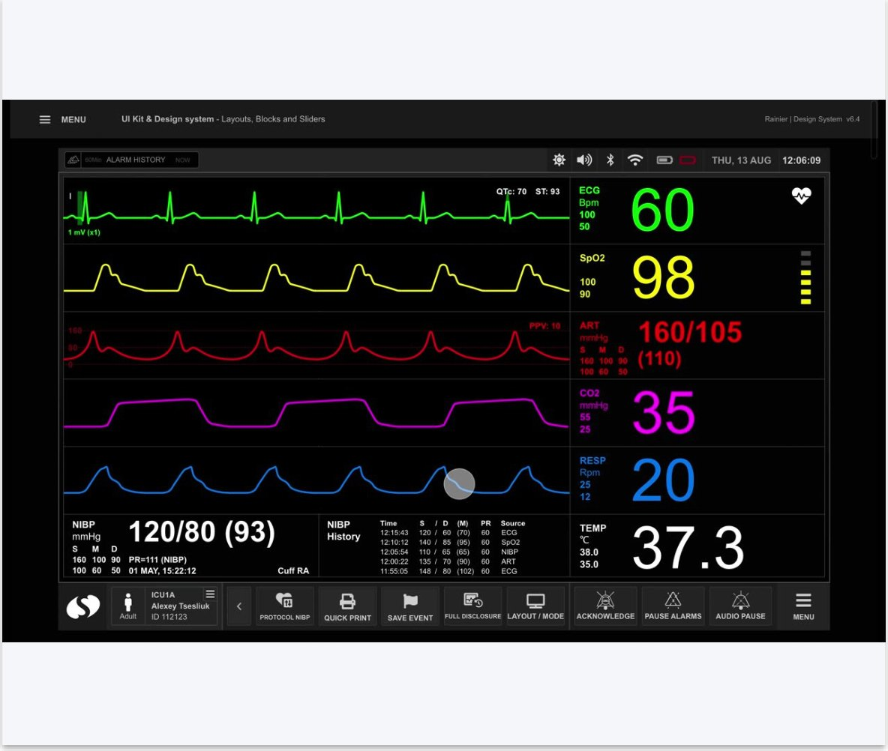
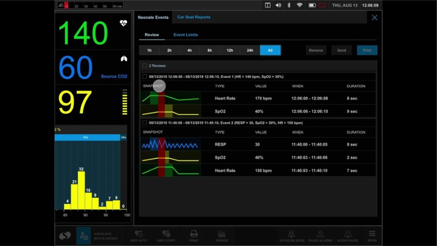
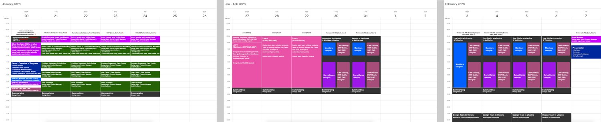
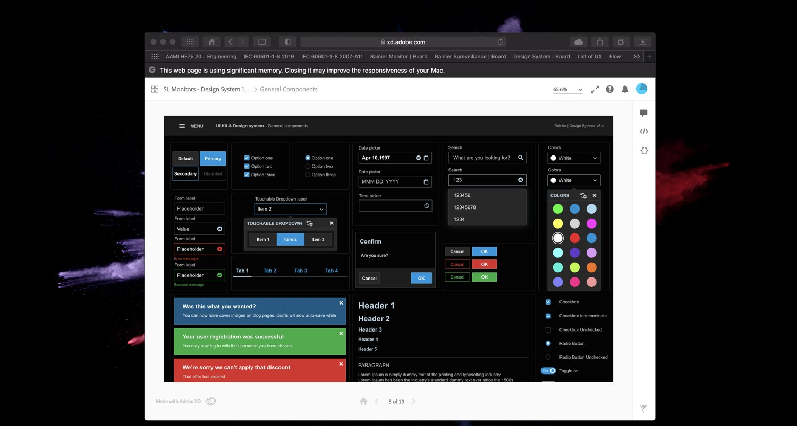
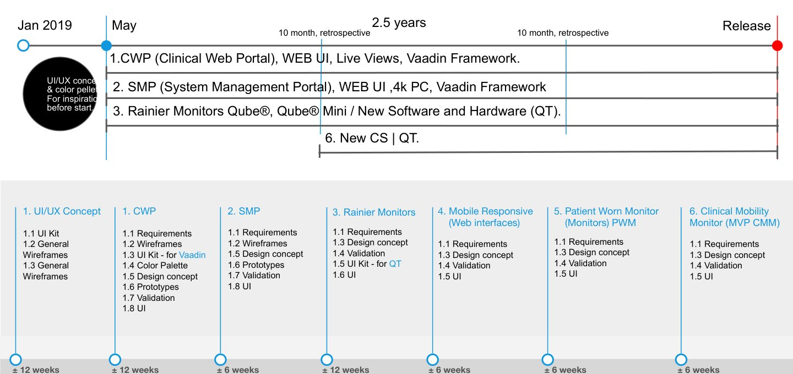
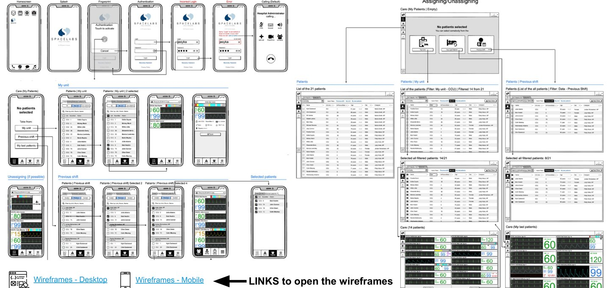
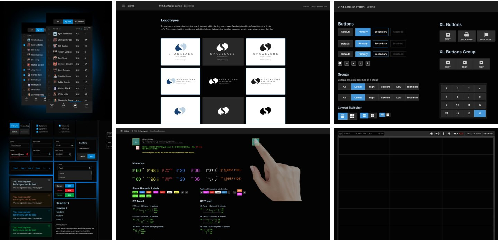
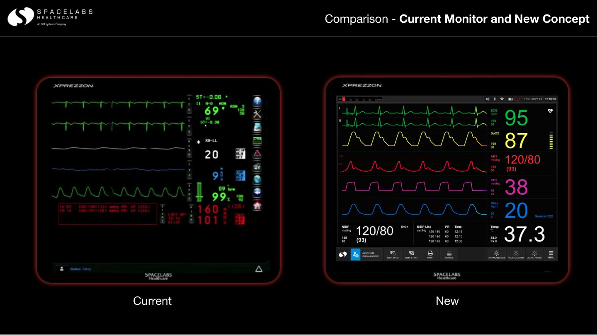
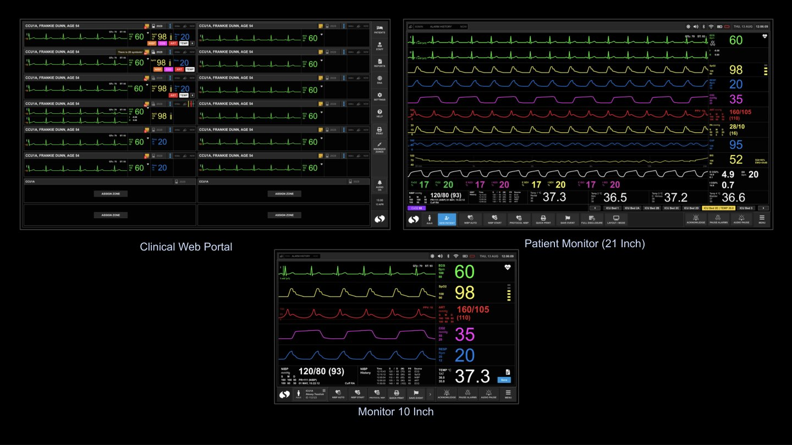

A medical devices company whose patient monitors hospitals depend on. Across seven years I led discovery and a redesign program grounded in HE75 human factors and IEC 60601-1-8 alarm standards, and built the design system used across the product line.

Discovery research framed a redesign program executed to HE75:2009 human factors and IEC 60601-1-8 alarm standards. The design system (UI kit, layouts, blocks, sliders) supports surveillance monitors, the clinical portal and the nurses’ mobile app, with modern UX patterns that still satisfy medical device regulation.
Distributed delivery across three countries stayed consistent because the system, not individual designers, carried the standard.

In January 2020 I led a six-person design team on a three-week onsite engagement at the client's site: kick-off sessions, use-case workshops, persona work on flipcharts, and hour-by-hour agendas with the people who build and use the monitors. The design system and every later screen grew out of those weeks.







Client names, process artifacts and outcomes stay within NDA. Ask, and I will walk you through the full case.
Get in touchRequest the case